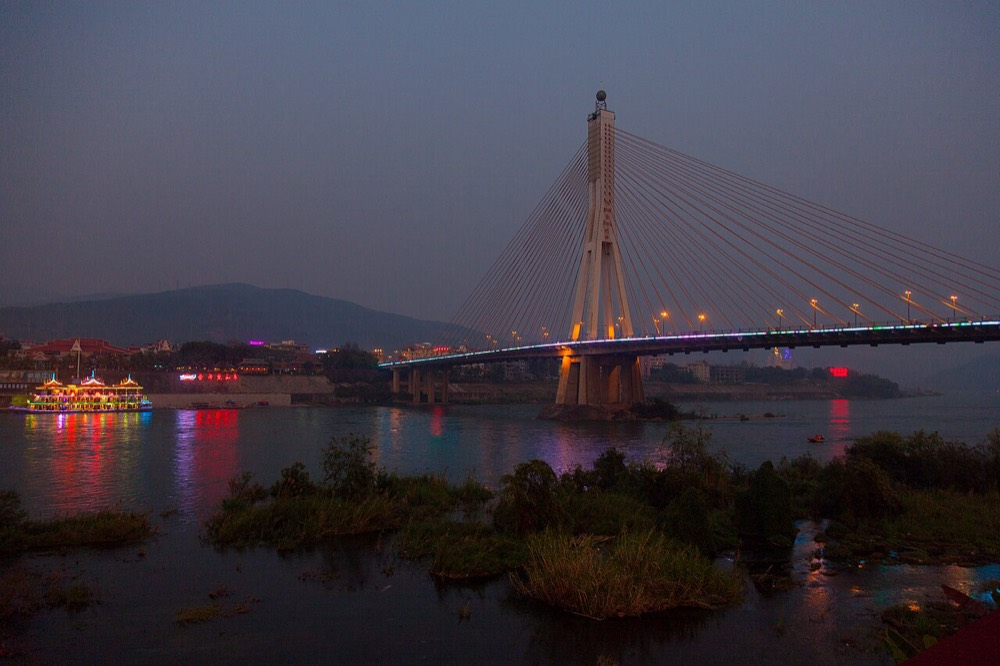
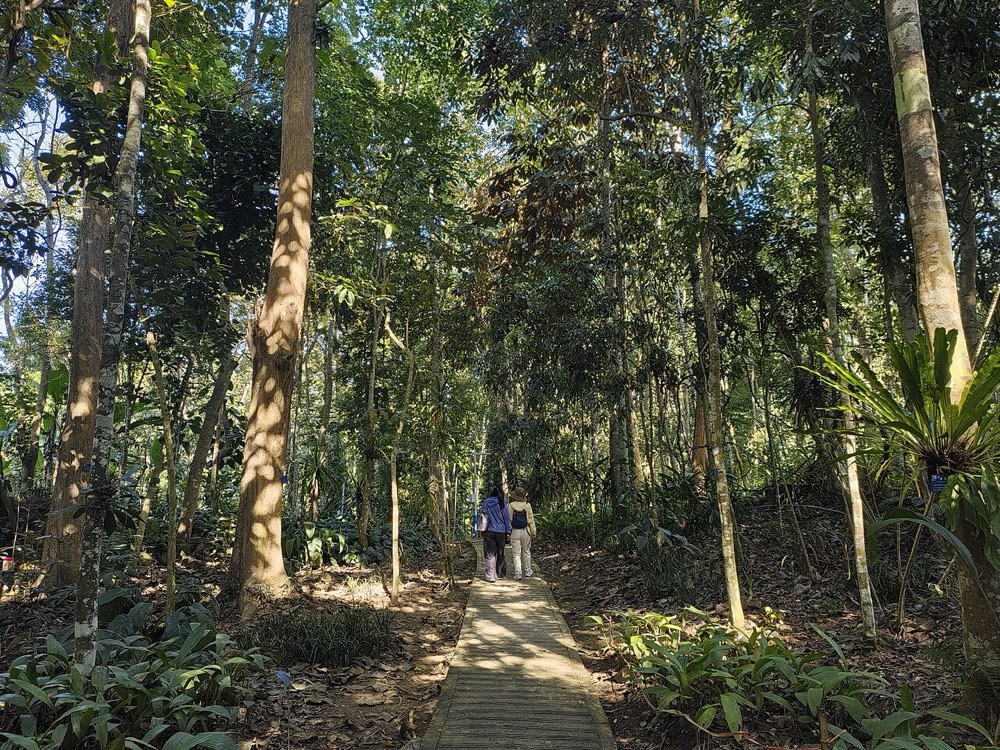
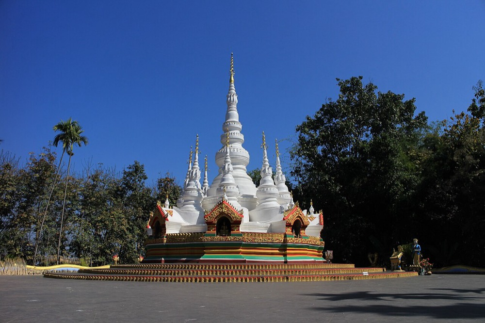
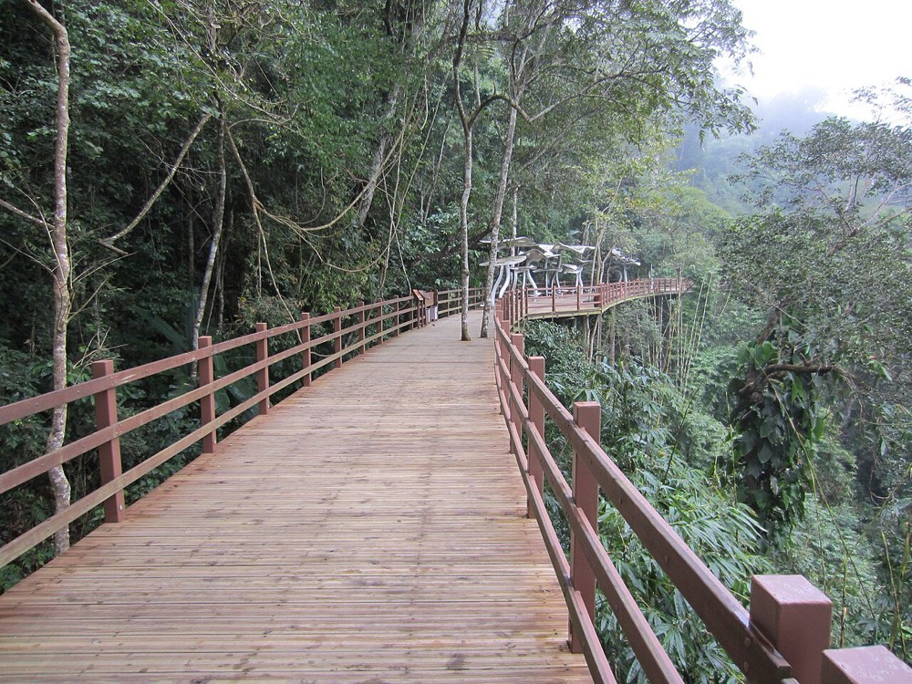

壹
什么时候去
WHEN · 点月份看数据
日期待定,所以这一节按"窗口"来选。下面是景洪近十年(2016–2025)的逐月实测气候:点任意月份,看它的平均高低温、月降水量和雨日数。西双版纳一年只分两季——旱季 11 月到次年 4 月(半年降水 277 mm),雨季 5–10 月(半年降水 1584 mm,是旱季的 5.7 倍)。
平均最高—
平均最低—
月降水—
雨日(≥1mm)—
夜间气温—
数据说明:Open-Meteo 历史再分析(ERA5 系),景洪点位 22.01°N / 100.79°E,2016–2025 共 10 年逐日数据聚合。雨季两季的边界不是精确日期,各年入汛、出汛时间会浮动;中国气象局科普口径另有一组常年值(年均温 22.6℃、最冷月 1 月 17.2℃、最热月 6 月 26.4℃、年均湿度 79%),与上表互相印证。十年内出现过的极端值:最高 41.5℃、最低 5.5℃。
三个窗口怎么选
PICK A WINDOW11 月 — 12 月 · 首选平均 25.4/15.3℃,月降水 60 mm、雨日约 7 天。旱季刚开场,空气干爽、白天不闷,避开了 12 月以后的避寒大军和春节。这一档机票和房价还没起飞。
3 月 — 4 月上旬 · 次选最干的时段(月降水 44 mm、雨日 5 天),白天 32℃ 偏热但雨最少,雨林花期好。但 4 月中旬一旦撞上泼水节,全州人流量级会翻倍(2026 年 4 月 11–15 日全州接待 238.08 万人次),价格也跟着翻。
1 月 — 2 月 · 避寒旺季平均 25.6/12.6℃,是杭州人最想逃过来的时段,但也是房价最高的时段。适合把预算花在住宿上的人。
5 月 — 10 月 · 雨季便宜、绿得最浓、萤火虫和瀑布都在这几个月,但要接受 6–8 月每月 253–367 mm 的降水和 25 天以上的雨日,以及山地路况与蚊媒风险。
日期相关的硬提醒
TIME-SENSITIVE水
泼水节是傣历新年,每年公历 4 月中旬。2026 年是 4 月 12–15 日:12 日晚会、13 日庆祝大会与孔明灯、14 日大游演与水灯、15 日 11:00 泼水狂欢(主场景洪泼水广场,告庄西双景是赶摆点)。2027 年官方日期尚未发布,历年都在 4 月中旬——想卡这个时间去,先确认日期再订票。
蚊
登革热与基孔肯雅热的流行期是 6 月中下旬到 11 月初,云南蚊密度 6–10 月达峰;白纹伊蚊是白天叮咬,没有特效疫苗。这两个病 2026-04-01 起已列入乙类法定传染病。旱季去风险低,雨季去必须认真防蚊。
雨
汛期约 5 月 1 日 — 10 月中旬是地质灾害重点期,景洪的勐龙—勐罕—景哈、嘎洒—景洪城周边—基诺山—勐养—大渡岗都在名单上。雨季走山路、进雨林景区前先看当天预警。
象
野生亚洲象是活的风险,不是传说。景洪市林草部门会逐日发布象群活动提示(2026 年 9 月 11 日的提示涉及勐旺、普文、大渡岗、景讷、勐养——野象谷所在的勐养镇就在其中)。自驾遇上象群不要下车、不要鸣笛、保持距离。
萤
萤火虫爆发期 5–8 月,植物园夜游是正经项目(见下节收费),要提前预约;错过这几个月就没有了。
茶
春茶季在 4 月(景迈山等茶山开采)。想看采茶、买春茶,就挑 4 月上旬——正好在泼水节人潮之前。
一句实话:如果你只有一次机会、又不想赌天气,选 11 月。这是十年数据里"降水少、气温舒适、又还没到旺季价"三条同时成立的那个月。
贰
怎么去
GETTING THERE方案 A · 最省时间
✈️ 杭州直飞嘎洒
- 时长:约 3 小时 50 分(如 JD5787 杭州 17:10 → 版纳 21:00 一类航班)
- 注意:这条线班次少、班期随航季调整,部分挂着"直飞"名义的航班实际耗时接近 5 小时(疑为经停)——下单前看清"经停/直飞"标注与总时长
- 票价参考:杭州→版纳单程 9 月约 460 元起、10 月约 560 元起、11 月约 1040 元起(越接近旱季旺季越贵);9 月下旬往返直飞约 1400 元起
- 适合:假期短、只想玩 4 天 3 晚的人
方案 B · 最稳、顺便玩昆明
✈️ + 🚄 飞昆明,转中老铁路动车
- 动车:昆明 → 西双版纳 每天 43 班,C 字头 3 小时 08 分 – 3 小时 42 分,二等座 178–239 元;昆明站、昆明南站都有发车
- 也可以:昆明 → 嘎洒飞机 50–65 分钟,9–11 月单程最低约 404 元
- 关键细节:西双版纳站就在嘎洒机场旁边,相距约 600 米——不管是飞过来还是坐动车过来,落地那一站几乎重合,接驳很简单
- 适合:想在昆明停一天、或直飞没票/太贵的时候

落地之后
ON THE GROUND| 环节 | 怎么走 | 价格口径 |
|---|---|---|
| 机场 → 市区 | 嘎洒机场距城区约 5 公里;有公交专线,6:30–22:00 每 30 分钟一班;打车到告庄约 15–20 分钟 | 专线约 4 元;出租到告庄 15–35 元(两个来源口径不同) 二手口径 |
| 车站 → 市区 | 西双版纳站在嘎洒镇,与机场相距约 600 米;到告庄打车约 20 分钟,也可坐 4 路公交 | 打车约 15–20 元 二手口径 |
| 市区 → 植物园 | 官方给了四条路:① 出租;② 版纳客运站(当地叫"翻胎厂")坐去勐仑的班车;③ 滴滴"站点巴士"输"勐腊县版纳植物园";④ 告庄的景区直通车直达 | 出租 250–300 元、班车 约 25 元、站点巴士 19.5 元起、直通车单程约 40 元 园区官方 |
| 直通车 / 套票 | 远郊景点基本都有直通车,但要提前一天订:景洪 ⇌ 望天树往返 55 元(单程 35 元);傣族园"往返车 + 门票 + 电瓶车"套票约 118 元/人 | 比包车便宜,但班次固定、时间不自由 攻略/OTA |
| 包车 | 远郊约 300–400 元/天,连包 2–3 天均价约 400 元/天;去望天树(单程 2.5h)5 座往返淡季 850–880 元、旺季 1200–1300 元 | 先谈清含不含油费过路费、司机餐、超时怎么算 攻略/OTA |
| 市区代步 | 网约车(滴滴/高德)在市区好用,起步约 8 元;共享电动车 30–80 元/天、租车 40–60 元/天。偏远景区的返程车不好叫,别指望现场打车 | — 攻略/OTA |
⚠️ 一条跟证件有关、攻略里常被漏掉的事:西双版纳的景洪市、勐海县、勐腊县三个县市全域都在边境管理区名录内,按规定非边境管理区居民前往需持边境管理区通行证。2026-04-15 起已启用电子边境管理区通行证、停发纸质证:内地 16 岁以上可在"移民局 12367"APP 或微信/支付宝小程序申领,有效期 3 个月,须与身份证同时使用。
怎么理解这件事:常规旅游线路(景洪市区、告庄、植物园、野象谷、傣族园)日常并不逐个查验;真正容易设卡的是往边境一线走的线路(打洛、勐景来、磨憨方向)。具体查验点位与执行细节未核实——稳妥做法是:只要行程里有"打洛/勐景来/边境口岸",就提前在手机上把电子证办好(免费、几分钟),别到检查站才想起来。身份证原件全程随身。
怎么理解这件事:常规旅游线路(景洪市区、告庄、植物园、野象谷、傣族园)日常并不逐个查验;真正容易设卡的是往边境一线走的线路(打洛、勐景来、磨憨方向)。具体查验点位与执行细节未核实——稳妥做法是:只要行程里有"打洛/勐景来/边境口岸",就提前在手机上把电子证办好(免费、几分钟),别到检查站才想起来。身份证原件全程随身。
结论式建议:4 天 3 晚就直飞,把时间留给雨林;5 天以上且不赶,走昆明中转 + 动车,票价便宜还能顺路停昆明。当地交通别硬凑公交——景点分散,直通车(便宜)或包车(自由)才是省时间的做法。
叁
门票与官方口径
TICKETS
先说清楚哪几个数字是官方给的。下面带绿色标记的是园区官网/官方小程序口径(中科院西双版纳热带植物园,官网 2026 年更新);带金色标记的是攻略与 OTA 流传的价格,政府那份《等级旅游景区价格信息》页面已经打不开,所以这几个数只能当估算,现场以售票处为准。

| 景点 | 门票 | 区间车 / 其他 | 口径 |
|---|---|---|---|
| 中科院西双版纳热带植物园(勐仑) | 全价 80 元 半价 40 元 |
西区 50 / 东区 50 / 全园 100 元;游览车 8:00–18:00 夜游:5 人内 450 元/场,6–14 人 90 元/人 |
官方 |
| 野象谷(勐养镇) | 成人 58–61 元,儿童约 30 元 | 高空索道 单程 50 / 双程 70 元;"雨林牧象"198 元(需预约);16:30 停止检票;看象靠 2280 米观象栈道(含 690 米高架)+ 索道 | 攻略/OTA |
| 曼听公园 | 30–40 元(含总佛寺) | 园内御象园 10:30 / 14:50 / 16:30,鹦鹉乐园 9:50 / 12:00 / 15:40;「澜沧江·湄公河之夜」篝火晚会 VIP 300 / 贵宾楼 480 元,含自助餐,约 18:50–21:40 | 攻略/OTA |
| 傣族园(橄榄坝) | 45 元;门票 + 观光车 105 元 | 泼水 14:00–14:40、15:40–16:20;孔雀舞 11:00、14:30–15:50、16:50;斗鸡 10:30。距市区约 27 km / 40 分钟 | 攻略/OTA |
| 望天树景区(勐腊) | 套票(门票 + 单程游船 + 树冠走廊)现场 198 / 平台 180 元;走廊单买 120 元,游船 40 元 | 树冠走廊 500 米长、离地 36 米、单向通行,17:00 关闭,恐高慎入;16:30 停止入园 | 攻略/OTA |
| 勐泐大佛寺 | 80 元 | 电动车 单程 40 / 往返 60 元;距市区仅 4 km | 攻略/OTA |
| 热带花卉园 | 40 元 | 观光车 40 元;距告庄约 10 分钟 | 攻略/OTA |
| 原始森林公园 | 约 45 元 | — | 攻略/OTA |
| 独树成林(打洛) | 35 元 | 观光车 50 元;距景洪约 130 km、2–2.5 小时,属边境一线方向 | 攻略/OTA |
| 基诺山寨 | 套票约 160 元(含向导讲解 + 民俗演出 + 品茶) | 仅单一游记来源,含什么以现场为准;景洪自驾 40 余分钟 | 未核实 |
| 曼掌村 / 曼远村 | 免费 | 曼掌村市区自驾约 30 分钟;曼远村在勐罕镇 | 攻略/OTA |
| 告庄西双景 · 星光夜市 · 总佛寺 | 免费 | 夜市约 17:00 开到深夜(23:00 与 24:00 两种说法);最佳 19:00–22:00,最挤 20:30–22:00 | 攻略/OTA |
植物园的免票与半价政策(官方,值得记):
免票:6 周岁或 1.2 米以下儿童;70 周岁以上;残疾人(重度可带 1 名陪护);现役、残疾、退役军人及"三属";在职与退休消防救援人员;人民警察;持"雨林惠才卡"可带 2 名随行、持"兴滇惠才卡"A 卡最多免 5 人 / B 卡最多免 3 人、持"无忧惠才卡"可带 2 名随行。
半价:7–18 周岁;60–70 周岁;全日制本科及以下在读学生。
证件:享受优惠要同时出示优惠证件原件 + 二代身份证原件,实名制购检票;官方小程序与携程/美团/同程/飞象/安心游/游云南六家合作平台才靠谱,别在小平台买。
免票:6 周岁或 1.2 米以下儿童;70 周岁以上;残疾人(重度可带 1 名陪护);现役、残疾、退役军人及"三属";在职与退休消防救援人员;人民警察;持"雨林惠才卡"可带 2 名随行、持"兴滇惠才卡"A 卡最多免 5 人 / B 卡最多免 3 人、持"无忧惠才卡"可带 2 名随行。
半价:7–18 周岁;60–70 周岁;全日制本科及以下在读学生。
证件:享受优惠要同时出示优惠证件原件 + 二代身份证原件,实名制购检票;官方小程序与携程/美团/同程/飞象/安心游/游云南六家合作平台才靠谱,别在小平台买。
植物园怎么逛(官方建议):西游览区是园林园艺,游览车 5 个上车站点,约 2.5 小时(荫生植物园 → 水生植物园王莲池 → 棕榈园 → 榕树园 → 奇花异卉园 → 树木园 → 百果园 → 藤本园);东游览区是原始森林与热带雨林,约 2.5 小时,下车后要徒步。全园 4–5 小时。王莲最佳观赏期是 7–8 月;园内还有王莲酒店可住(客房 0691-8717066)。
肆
两套动线
ITINERARY · 默认展开 · 点击可收起🌿
5 天 4 晚 · 从容版雨林 + 傣寨 + 夜市⚡
4 天 3 晚 · 紧凑版只留最不能省的
▾
D1 下午
落地,先进城
直飞一般傍晚落地(如 21:00 到),动车则下午到。住告庄西双景一带:夜市、大金塔、总佛寺、江边都在步行范围。当晚就去星光夜市(免费,17:00 开到深夜,19:00–22:00 最好逛,20:30–22:00 最挤)吃第一顿傣味,人均 60–80 元。顺手把第二天的直通车或包车定下来。
▾
D2 全天
中科院热带植物园(重头戏)
从告庄坐景区直通车(单程约 40 元)或包车去勐仑,约 60 km / 1 小时。买全园游览车票(100 元):上午西区看水生植物园的王莲池、榕树园、奇花异卉园,下午东区进原始雨林与绿石林看绞杀榕、大板根——全园 4–5 小时。5–8 月来的话加一场夜游看萤火虫:6–14 人 90 元/人,须提前 1 天在官方小程序预约,参加夜游不用再买门票。
▾
D3 全天
野象谷 → 曼听公园夜场
上午北上野象谷(勐养镇,约 36 km / 40 分钟,门票 58–61 元,16:30 停止检票):走 2280 米观象栈道(含 690 米高架)、坐索道找野象。野象遇见概率最高的是 12 月–次年 4 月的晨昏,但谁都不能保证——园内"大象科普园"的自然行为展示与野生象是两回事。傍晚回城进曼听公园(30–40 元,含总佛寺;御象园 10:30/14:50/16:30),晚上看「澜沧江·湄公河之夜」篝火晚会(约 18:50–21:40,含自助餐,场次以官方当日为准)。
▾
D4 全天
傣族园(或基诺山寨 / 边境一线)
往东南去橄榄坝的傣族园(约 27 km / 40 分钟,门票 45 元;往返车 + 门票 + 电瓶车套票约 118 元):傣家竹楼、佛寺,泼水 14:00–14:40 与 15:40–16:20,孔雀舞 11:00 / 14:30–15:50 / 16:50。三选一:傣族园最民俗最近;基诺山寨(套票约 160 元)看基诺族文化;想走边境一线就去打洛方向的独树成林(35 元 + 观光车 50 元,130 km / 2–2.5 小时,记得先办电子边境通行证)。
▾
D5 上午
市区收尾 + 返程
最后半天留给市区:总佛寺、告庄江边、热带花卉园(40 元 + 观光车 40 元,距告庄约 10 分钟),或者去免费的曼掌村看傣寨。买点普洱茶和小粒咖啡。返程留足 3 小时——西双版纳站紧挨着机场,但旺季的值机与安检队伍会很长。
如果一定要去望天树:它在勐腊县,单程约 2.5 小时山路,当天往返很赶。正确做法是 D4 下午赴勐腊住一晚,D5 一早进景区(建议 9 点前),树冠走廊 500 米、离地 36 米、单向通行,然后从勐腊返程。5 座车往返淡季 850–880 元、旺季 1200–1300 元。
▾
D1 下午
落地即入住告庄
紧凑版没有缓冲,建议直飞。落地放行李,当晚星光夜市吃傣味(人均 60–80 元),顺便把第二天的直通车/包车定下来——直通车要提前一天订。
▾
D2 全天
植物园一整天
全园 4–5 小时,加上往返 1 小时车程就是一整天。如果只来得及去一个地方,就是这里:80 元门票 + 100 元全园游览车,是这份笔记里唯一有官方价目表、也最不会失望的一站。
▾
D3 全天
野象谷 或 傣族园(二选一)
只有一天可选:想看雨林与野生象去野象谷(北边 36 km),想看傣族生活与泼水去傣族园(东南 27 km)。别贪心串两个——一南一北,一天串完等于全在路上。傍晚都来得及回城,想吃夜市就回告庄。
▾
D4 上午
市区 + 返程
上午曼听公园 + 总佛寺(30–40 元,御象园 10:30 那一场),或者去距告庄 10 分钟的热带花卉园。下午飞回杭州。紧凑版的代价很直白:夜游萤火虫(仅 5–8 月)和曼听公园的篝火晚会基本都要放弃。
两套动线的差别:5 天版多出来的是夜游萤火虫(仅 5–8 月)、曼听公园篝火晚会和一个"D4 三选一"的名额;4 天版必须在野象谷和傣族园之间选一个。必须包车的地方:望天树(单程 2.5h)、打洛/独树成林(130 km)、南糯山;可以直通车或打车的地方:植物园、野象谷、傣族园、曼听公园、勐泐大佛寺、花卉园、告庄。如果你冲着泼水节去,4 月中旬那几天景洪市区本身就是主会场(告庄 + 泼水广场承载近六成客流、会封路),动线要整体重排。
伍
花费估算器
BUDGET2
往返机票(杭州 ↔ 版纳)—
住宿 × 4 晚(每间,两人摊)—
门票 + 区间车(植物园全园票为主)—
当地交通(包车 / 直通车 / 打车)—
餐饮(5 天,含夜市)—
人均合计
—
按两人同行、住宿平摊估算。机票按季节给区间(淡季单程约 460 元、旱季约 1040 元、旺季更高),住宿经济档约 150–250 元/晚、舒适档约 500–900 元/晚,门票与区间车按植物园全园 180 元 + 其他景点 200 元估,当地交通按包车/直通车均摊 400 元估,餐饮 5 天约 500 元。这些是"日期待定"下的区间估算,不是报价——旺季(寒假、泼水节、国庆)请整体上浮。
住哪:三个片区,三种玩法
WHERE TO STAY| 片区 | 优点 | 代价 | 参考价(每晚) |
|---|---|---|---|
| 告庄西双景 | 下楼就是星光夜市与大金塔,傣式客栈多,夜生活最旺,去机场/车站都方便 | 旺季吵、价格上浮最猛 | 普通民宿 150–250、精品客栈 280–350;旺季上浮 30%–100%(春节可能从 150 涨到 300–400) |
| 景洪市区 / 泼水广场 | 市中心、近江边,老牌酒店实惠,生活气息浓 | 设施偏旧,临街房间吵 | 全季一类 250–350、经济连锁 150–250、青旅床位 50–80 |
| 万达 / 融创度假区 | 五星与别墅型,安静、离机场近,适合带娃 | 距告庄约 15 km,没有夜生活,出行依赖车 | 融创(华美达)一类 300–600;高星另有更高口径 |
一个能救命的参照价:节假日期间西双版纳对标准客房执行政府诚信指导价上限——五星/豪华 3800、四星 2100、三星 1300、两星及以下 600 元/间·天。如果泼水节或春节期间有人报出远高于这个的数字,先问清楚房型和依据。
怎么选:第一次来、以吃和夜逛为主 → 告庄;想要安静、预算优先 → 市区;带老人小孩、自驾 → 度假区。如果行程里有望天树,最后一晚建议住勐腊县城,否则单程 2.5 小时的山路会把一整天吃掉。
陆
吃什么
EAT🐟
傣味烧烤 · 香茅草烤鱼夜市和街边摊的主力:鱼肚里塞香茅草与香料,炭火上烤。配上蘸水和糯米饭,是第一顿最容易惊艳的东西。
🍍
菠萝饭菠萝掏空装糯米与果肉蒸,甜口,配辣的傣味刚好解辣。星光夜市几乎每家都有。
🐔
舂鸡脚 / 舂木瓜木臼里舂出来的凉拌,酸辣冲鼻,配冰镇饮料;怕辣要提前说"不要小米辣"。
🍜
米干 · 撒撇米干是当地早餐主角(汤的/拌的都有);撒撇是牛苦肠水调的蘸水,味道两极分化,敢试的人会记一辈子(也可能只记一次)。
☕
小粒咖啡 · 老挝冰咖啡普洱与版纳一带产咖啡,夜市的老挝冰咖啡(炼乳 + 塑料袋装)是标配,边逛边喝。
🍵
普洱茶南糯山等茶山在版纳境内,4 月春茶季。买茶注意:茶山推销和"免费品茶"是常见套路,想买去正规茶店或就地在茶园买。
价格参照(星光夜市):人均 50–100 元就能吃得很饱,按 60–80 元算比较实在。摊价:舂鸡脚 15–25 元/份、香茅草烤鱼 30–40 元/条、泡鲁达 10–15 元、老挝冰咖啡 15–20 元。"孔雀宴 / 手抓饭"是当地最省事的正餐形式——一桌十几样小菜配糯米饭,告庄一带的傣王府孔雀宴人均约 50 元起、小玉家约 61 元、喃傣·老味道约 60 元。
还有两个值得记住的名字:包烧(用芭蕉叶包着烧的鱼、肉、菜,香气全锁在叶子里)和毫糯索(石梓花粉加糯米粉做的粑粑,傣历新年必备——想吃到它,基本要赶上泼水节)。
一个提醒:傣味整体偏酸辣、生冷与烧烤多,肠胃敏感的人第一两天别猛上。夜市的价格透明、人多的地方翻台快,相对最不容易踩雷。
柒
行前清单
CHECKLIST · 记得勾选✓
先定窗口再定票:避 6–8 月雨季、避寒假/泼水节/国庆高峰✓
身份证原件 + 若走边境一线(打洛/勐景来/磨憨),提前在"移民局 12367"办电子边境通行证✓
防蚊三件套:驱蚊液(含避蚊胺/派卡瑞丁)、长袖长裤、蚊帐或电蚊香——6–11 月重点✓
防晒:热带紫外线强,遮阳帽 + 防晒霜 + 墨镜✓
雨具(雨季):轻便雨衣优于伞,雨林徒步要防蚂蟥与湿滑✓
好走的鞋 + 一双能湿的凉鞋(泼水节/傣族园用得上)✓
进佛寺的着装:过膝下装、不裸露肩背,进殿脱鞋✓
提前 1–3 天预约:植物园门票与夜游(夜游建议提前 1 天)✓
常用药:肠胃药、止泻药、防中暑、创可贴(生冷酸辣是主要变量)✓
充电宝(雨林与夜市拍照耗电快,山里信号弱更费电)✓
出发前用官方公众号确认夜间演出/篝火晚会当天场次✓
订直通车要提前一天(望天树、植物园、傣族园都有直通车)0 / 12
捌
避坑与安全
TIPS
低价团已经被央视点名。2026 年 8 月央视《财经调查》曝光云南(含昆明、西双版纳)"999 元六天五晚"一类低价团强制购物、层层转包,云南省文旅厅当晚通报查处。西双版纳是这条线路的重灾区——凡是"含全程门票 + 五星酒店 + 只要几百块"的团,都别报。

票
只在官方渠道买。植物园官方明确点名:官方小程序 + 携程/美团/同程/飞象/安心游/游云南六家平台,其他平台买了可能无法检票入园。
象
遇野象有明确的禁令(林草部门口径):严禁围观、尾随、拍照、投喂、挑逗、驱赶,也禁放鞭炮、扔石块棍棒;避开清晨、傍晚、夜间与阴雨大雾——这些时段人象相遇概率最高。看到脚印、粪便或听到异响,安静快速撤离,不要奔跑。2025 年 5 月勐腊县曾有一名村民遭野象攻击身亡,事前林草部门已发过预警——这不是景区表演,是真实风险。
边
边境一线要办电子边境通行证。西双版纳三个县市全域在边境管理区名录内;2026-04-15 起停发纸质证、改发电子证(有效期 3 个月,须与身份证同用)。常规线路日常不查验,但走打洛、勐景来、磨憨方向请提前在"移民局 12367"小程序上办——免费、几分钟,别到检查站才想起。
演
夜间演出与篝火晚会的时间、票价我没有拿到带日期的官方口径(现有票价 VIP 300 / 贵宾楼 480 来自无日期的老页面)。这类演出最容易调整场次,订票前用官方公众号确认当天是否照常、几点开始。
价
几个价格本身就是"多口径"的:野象谷门票 58–61 元、索道 50/70 元,望天树套票现场 198 与平台 180 元,曼听公园 30–40 元。差几十块不值得纠结,但别为了省二三十块在小平台买到不能实名核销的票。
茶
茶山"免费品茶"是销售场景。不买就礼貌离开;真买记得问清树龄、山头、年份,并要求开票。
雨
雨季比"半年"还要长一点。2025 年景洪的雨季是 5 月 1 日 — 11 月 23 日;9 月是主汛期收尾,土壤已经饱和,滑坡、崩塌、滚石风险在这时最实在。暴雨预警时景区会关停高风险项目——别硬闯。
蚊
登革热没有特效疫苗。白天也要防蚊(白纹伊蚊白天咬人),出现发热 + 关节痛尽早就医并说明去过哪里。
礼
傣族村寨与佛寺讲规矩。进佛寺脱鞋、着装遮肩过膝;不摸佛像、不摸小和尚的头;寨子里的"寨门"与祭祀物别乱拍。
价
包车按天议价,先谈清三件事:含不含油费过路费、是否含司机餐、超时怎么算。旺季价格会明显上浮。
这份笔记的边界:出行日期未定,所以所有价格都是核查日(2026-09-15)的快照或区间,不是报价;植物园的部分为园区官方口径,其余门票、包车行情、住宿价格来自攻略与 OTA,未获官方价目表。动线是建议版,具体哪天去哪,等你定了日期再按季节和天气重排一次。